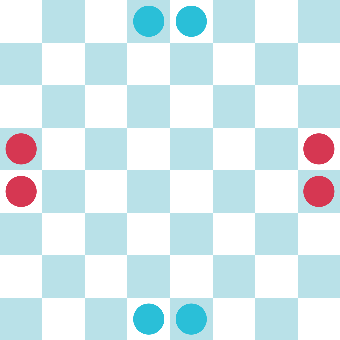
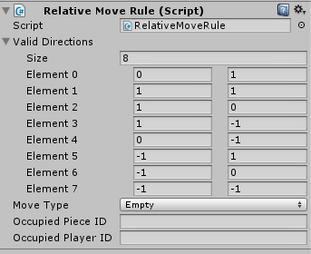
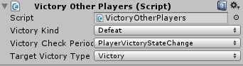
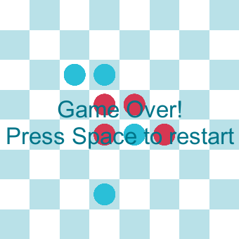

Creating Your Own Victory Rules

In this tutorial, we will cover how to create a custom victory rule for our game. To make it clear, we will create a very simple game.

This game has the following rules:
- Red starts.
- Only one turn per player.
- You can only move to adjacent cells.
- You can't capture enemy pieces.
- You win when one of your pieces has three or more pieces of the same color in neighboring cells.
This last condition is not a common game rule. Therefore, we will make a script to validate this condition and end the game when it happens.
1. Set Up the Game Board and Pieces
Configure the game board as shown in the image above, and make sure your pieces have a “Relative Move Rule” script with 8 relative valid directions:

We will also use a Canvas Text to show a message when the game ends. To know how to do this, refer to this tutorial.
Create a new script that will drive the game (YourOwnVictoryRule), and add it to the GameBoard. Also, add a VictoryOtherPlayer component to the game board. This is a default victory condition that can be configured to make a player lose if the other player wins, like this:

2. Implement the Custom Victory Rule
Implement the custom victory rule class, and call it CustomVictoryRule, and add it to the game board. Make it extend from VictoryRules and use a RectPoint and GridGamePieceSettings class as types:
public class CustomVictoryRule : VictoryRules<RectPoint, GridGamePieceSettings>
Implement the CheckVictory method with the rule. To do this, iterate over every point on the board using currentState.GetAllPoints(). If the cell is not empty and if the piece belongs to the current player, then we count how many neighbors of the same type the piece has. If we count 4, then we set the current player as a winner with the following line.
currentPlayer.SetVictoryState(VictoryType.Victory);
Since we use the Victory Other Player script, making a player win means the other player loses, and this ends the game.
Try out the game, change the number of pieces, add pieces to the board, and see how it all behaves.
